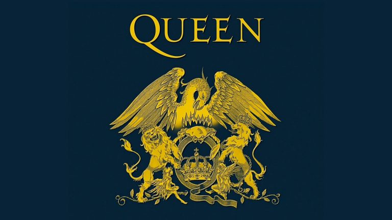

Queen

Reino Unido | Nacimiento: 1970, Londres
Miembros clásicos: Freddie Mercury, Brian May, Roger Taylor, John Deacon
Canción más icónica: Bohemian Rhapsody
Influencia: Fusionaron géneros como el rock, ópera, pop y metal. Innovaron con videoclips y shows teatrales. Su versatilidad musical rompió moldes y su presencia escénica redefinió el espectáculo en vivo.